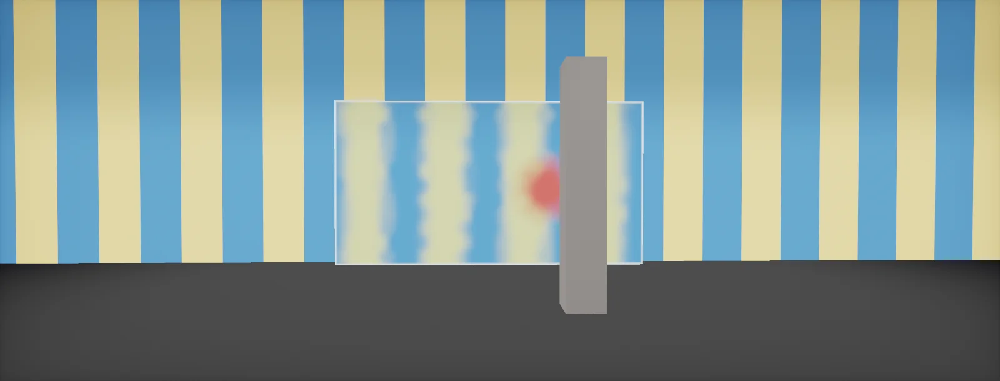

Faking Transparency with Screen Passes
Blending versus reading a copy of the screen: what the copy contains in each engine, full-screen passes driven by a mask, foreground leaks and depth rejection, thickness from depth, and the artefacts to hide, built in Unity HDRP and Unreal.

Two ways to see through a surface
There are two fundamentally different ways to draw something you can see through:
- Blending: draw the surface on top of what is already in the frame and mix by alpha (alpha blending). The GPU does the mix in fixed hardware; the shader only supplies a colour and an alpha.
- Reading the screen: copy what is behind first, then let the shader read that copy wherever it likes and compute the final colour itself, written as an opaque pixel.
Blending is cheap and sorts with everything, but a single alpha cannot describe glass that absorbs colours differently. Red glass should make a green background nearly black; blending can only fade towards red:
Reading the screen allows everything blending cannot: per-channel absorption, refraction (reading somewhere else), blur (reading a blurred copy), absorption by depth (reading depth too). The price is the copy and its limits, which the rest of this unit is about.
Where the copy comes from
Every renderer makes a copy of the frame at a fixed point, usually after the opaque objects and the sky, before transparent objects. Shaders that run later read it:
| Renderer | The copy | What is in it | How a shader reads it |
|---|---|---|---|
| Unity built-in | GrabPass | everything drawn so far | GrabPass {} then _GrabTexture; a copy per use unless named |
| Unity URP | Opaque Texture | opaque objects and sky | enable on the URP Asset; Shader Graph Scene Color, HLSL SampleSceneColor |
| Unity HDRP | Colour pyramid | opaque objects and sky, with blurred mips | Lit refraction; Shader Graph HD Scene Color (with LOD); custom passes CustomPassSampleCameraColor |
| Unreal | Scene colour | opaque objects (translucency reads it); post process: the whole frame so far | SceneColor node in translucent materials, SceneTexture: PostProcessInput0 in post process materials |
The copy costs memory and bandwidth every frame, and a mip chain for blur costs a third more:
Two rules follow. Ask for the copy once and share it: the old Unity GrabPass without a name made a copy per object, which was a common performance trap. And remember when the copy was made: anything drawn after it (particles, other glass, UI) is not in it, so it cannot appear behind the surface that reads it.
A full-screen pass with a mask
Each glass object reading the copy works, but each one is a separate transparent draw with its own sorting. A different structure turns it around:
- Draw all "glass" objects into a mask only: a stencil value or a custom buffer, plus their depth. They are not drawn normally.
- Run one full-screen pass that reads the scene colour, the depth and the mask, and applies the effect wherever the mask is set.
The pattern fits effects that should look continuous across many objects or ignore their edges: a frosted window wall built from many panes, heat haze over an area, an x-ray or scanner view through walls, an underwater region, a force field. It costs one full-screen pass regardless of how many objects are masked, there is no sorting among them, and the effect can blur across their borders.
What it gives up: per-object lighting and reflections (add them as a separate, ordinary pass), and the mask is binary per pixel unless you store coverage.
Leaks and depth rejection
Distortion reads the copy at an offset position. The copy is flat: it does not know which pixels were behind the glass and which in front of it. Near an object that stands in front of the glass, the offset lands on that object and copies its colour into the glass, a ghost outline:
The fix is to compare depths. Read the depth buffer at the offset position: if that pixel is closer to the camera than the glass surface, it was in front of the glass, and the shader falls back to the undistorted position. In reversed-Z depth buffers (HDRP, Unreal's device depth) "closer" means a larger value; with linear depth, a smaller one (depth conventions).
The same check repairs water edges, heat haze around characters and every refraction that runs into foreground geometry.
Thickness from depth
With depth available, the shader can measure how much material the view ray crosses. Two cases:
- A volume in front of opaque geometry (water, fog, murky glass blocks): thickness = depth of the opaque surface behind − depth of the glass surface. That is the water depth trick.
- A closed object (a crystal, jelly): render its back faces' depth into a second buffer; thickness = back depth − front depth.
Feed the thickness into Beer–Lambert absorption per channel and the object gets darker and more saturated where it is thick, the strongest cue that it is a volume and not a coloured film. Linearise both depths before subtracting.
Artefacts and how to hide them
- Missing transparents: particles and other glass behind the surface are not in the copy. Draw important ones before the copy (some engines let you move them to a pre-refraction pass; HDRP has Before Refraction), or accept it.
- Screen borders: the offset reads outside the image near the edges. Fade the offset towards the border:
- Resolution and mips: blurred reads of a mip chain shimmer when the camera moves slowly; a Gaussian-filtered pyramid (HDRP) or a few extra taps hide it.
- Temporal anti-aliasing: the effect has no motion vectors of its own, so fast distortion smears. Keep animation slow or mark the pixels for less history.
- Double refraction: two layers of glass cannot both refract through each other. Merge them in the mask pattern, or let the rear one blend.
- Post-processing order: before or after tonemapping, before or after depth of field. Inject where the effect should sit: a frosted window is part of the scene (before), a scanner overlay part of the UI (after).
Build it in Unity HDRP
HDRP's Custom Pass system does exactly the mask-then-full-screen pattern: a Draw Renderers pass writes the glass objects into the custom colour and depth buffers, a Full Screen pass reads the scene colour pyramid, the camera depth and the mask, and composites. The objects never render normally, so there is no sorting between them. Written for Unity 6 with HDRP 17; Unity 2022 LTS works the same apart from a few renamed menu entries.
- In the HDRP Asset, under Rendering > Custom Pass, make sure custom passes are enabled and set Custom Buffer Format to
R8G8B8A8(enough for a coverage mask). - Add a layer
ScreenGlass(Edit > Project Settings > Tags and Layers), put the glass objects on it, and remove it from the camera's Culling Mask. The objects now only exist for the custom pass, which can still draw layers the camera does not. - Save
ScreenGlassMask.shaderandScreenGlass.shaderinAssets/Shaders/and create a material from each (right-click the shader, Create > Material). - Create GameObject > Volume > Custom Pass. Mode
Global(or Local with a collider around the area), Injection PointBefore Post Process. - Add a Draw Renderers Custom Pass: Target Color Buffer
Custom, Target Depth BufferCustom, Clear FlagsAll, Layer MaskScreenGlass, QueueAll, Override ModeMaterialwith the mask material and Pass NameFirstPass. The mask shader discards pixels hidden behind opaque objects itself. - Add a Full Screen Custom Pass below it: Target Color Buffer
Camera, Target Depth BufferNone, materialScreenGlass. Order matters: the mask must be written first. - Tune the material: Distortion 0.005–0.02, Blur 0 for clear glass and 2–4 for frosted, Absorption per channel (higher red for a blue-green tint). Move a foreground object in front of the glass and check that no outline leaks into the distortion; switch the depth-rejection lines off to see the difference.
// Writes coverage (and depth) of "screen glass" objects into HDRP's custom buffers.
// Used as the override material of a Draw Renderers custom pass (Pass Name: FirstPass).
Shader "Renderers/ScreenGlassMask"
{
Properties { }
HLSLINCLUDE
#pragma target 4.5
#pragma only_renderers d3d11 playstation xboxone xboxseries vulkan metal switch
#pragma multi_compile_instancing
ENDHLSL
SubShader
{
Tags { "RenderPipeline" = "HDRenderPipeline" }
Pass
{
Name "FirstPass"
Tags { "LightMode" = "FirstPass" }
Blend Off
ZWrite On // the custom depth buffer keeps the nearest glass surface
ZTest LEqual
Cull Back
HLSLPROGRAM
#define ATTRIBUTES_NEED_NORMAL
#include "Packages/com.unity.render-pipelines.core/ShaderLibrary/Common.hlsl"
CBUFFER_START(UnityPerMaterial)
CBUFFER_END
#include "Packages/com.unity.render-pipelines.high-definition/Runtime/RenderPipeline/RenderPass/CustomPass/CustomPassRenderersV2.hlsl"
void GetSurfaceAndBuiltinData(FragInputs fragInputs, float3 viewDirection, inout PositionInputs posInput,
out SurfaceData surfaceData, out BuiltinData builtinData)
{
// Hidden behind an opaque object? Then this pixel is not glass. (Reversed Z: smaller = farther.)
float sceneDepth = LoadCameraDepth(posInput.positionSS);
if (posInput.deviceDepth < sceneDepth)
discard;
ZERO_BUILTIN_INITIALIZE(builtinData);
ZERO_INITIALIZE(SurfaceData, surfaceData);
builtinData.opacity = 1.0; // alpha = coverage
surfaceData.color = float3(1.0, 1.0, 1.0);
}
#include "Packages/com.unity.render-pipelines.high-definition/Runtime/RenderPipeline/ShaderPass/ShaderPassForwardUnlit.hlsl"
#pragma vertex Vert
#pragma fragment Frag
ENDHLSL
}
}
}// Full-screen custom pass: distorts, blurs and tints the scene wherever the glass mask is set.
// Injection point: Before Post Process. Target Color Buffer: Camera.
Shader "FullScreen/ScreenGlass"
{
Properties
{
_Tint("Tint", Color) = (0.85, 0.95, 1.0, 1.0)
_Distortion("Distortion (screen UV)", Range(0, 0.05)) = 0.01
_NoiseScale("Distortion scale", Float) = 40
_BlurLod("Blur (colour pyramid mip)", Range(0, 6)) = 1.5
_Absorption("Absorption per metre (RGB)", Vector) = (0.6, 0.15, 0.1, 0)
_MaxThickness("Max thickness (m)", Float) = 20
_EdgeFade("Screen edge fade width", Range(0.001, 0.2)) = 0.05
}
HLSLINCLUDE
#pragma vertex Vert
#pragma target 4.5
#pragma only_renderers d3d11 playstation xboxone xboxseries vulkan metal switch
#include "Packages/com.unity.render-pipelines.high-definition/Runtime/RenderPipeline/RenderPass/CustomPass/CustomPassCommon.hlsl"
float4 _Tint;
float _Distortion, _NoiseScale, _BlurLod, _MaxThickness, _EdgeFade;
float4 _Absorption;
float4 FullScreenPass(Varyings varyings) : SV_Target
{
UNITY_SETUP_STEREO_EYE_INDEX_POST_VERTEX(varyings);
uint2 px = (uint2)varyings.positionCS.xy;
float coverage = CustomPassLoadCustomColor(px).a; // written by ScreenGlassMask
if (coverage <= 0.0)
discard; // not glass: keep the camera colour
float2 uv = varyings.positionCS.xy * _ScreenSize.zw;
float glassDepth = CustomPassLoadCustomDepth(px);
// 1. offset: a simple animated wobble; replace with a normal map in your project
float2 n = float2(sin(uv.y * _NoiseScale + _TimeParameters.x * 1.3),
cos(uv.x * _NoiseScale * 0.8 + _TimeParameters.x * 0.9));
float2 uvOff = uv + n * _Distortion;
// 2. fade the offset out near the screen border
float2 edge = saturate(min(uvOff, 1.0 - uvOff) / _EdgeFade);
uvOff = lerp(uv, uvOff, edge.x * edge.y);
// 3. depth rejection: if the pixel we would read is in front of the glass, read straight through
float depthAtOff = CustomPassLoadCameraDepth(uint2(uvOff * _ScreenSize.xy));
if (depthAtOff > glassDepth) // reversed Z: larger = closer
uvOff = uv;
// 4. read the scene behind, blurred by the mip level
float3 behind = CustomPassSampleCameraColor(uvOff, _BlurLod);
// 5. thickness from depth: from the glass surface to the opaque surface behind it
float sceneDepth = CustomPassLoadCameraDepth(uint2(uvOff * _ScreenSize.xy));
float d = LinearEyeDepth(sceneDepth, _ZBufferParams) - LinearEyeDepth(glassDepth, _ZBufferParams);
float3 T = exp(-_Absorption.rgb * clamp(d, 0.0, _MaxThickness));
return float4(behind * T * _Tint.rgb, coverage);
}
ENDHLSL
SubShader
{
Tags { "RenderPipeline" = "HDRenderPipeline" }
Pass
{
Name "Custom Pass 0"
ZWrite Off
ZTest Always
Blend SrcAlpha OneMinusSrcAlpha
Cull Off
HLSLPROGRAM
#pragma fragment FullScreenPass
ENDHLSL
}
}
Fallback Off
}Reflections are not part of this pass. Add them with a second, ordinary transparent material on the same meshes in a layer the camera does render (Fresnel-scaled probe reflection, premultiplied, as in the Glass unit), or add a probe sample to the full-screen shader.
Build it in Unreal Engine
Unreal's version of the pattern is a Post Process Material that reads the scene colour and depth, with the glass objects marked in the Custom Depth and Stencil buffers. The meshes are hidden from the main pass, so they exist only as a mask. Written for Unreal Engine 5.6 and later. Substrate is production-ready from 5.7; check Project Settings > Rendering > Substrate to see which material model a project uses.
- In Project Settings > Rendering > Postprocessing, set Custom Depth-Stencil Pass to
Enabled with Stencil. - On each glass mesh component: Rendering > Render CustomDepth Pass on, CustomDepth Stencil Value 5 (any value you reserve for glass), and Render in Main Pass off so the mesh is invisible except in the custom depth.
- Create
PP_ScreenGlass: Material DomainPost Process, Blendable LocationBefore Tonemapping. Get the mask with a SceneTexture: CustomStencil node compared to 5 (an If node or a subtract and saturate), and only where the CustomDepth is nearer than the SceneDepth at the same pixel (the glass is not hidden). - Offset: a Custom node with
ScreenGlassUV.ush; UV from ViewportUV (or ScreenPosition ViewportUV output), Time from Time, plus scalar parameters Strength (0.005–0.02), Scale (40) and EdgeFade (0.05). - Depth rejection: sample SceneTexture: SceneDepth with the offset UV, SceneTexture: CustomDepth with the plain UV, and pass both into a Custom node with
DepthReject.ush. Its output is the UV to read the scene with. - Read SceneTexture: PostProcessInput0 at that UV. For absorption, multiply by Exp(−Absorption · (SceneDepth − CustomDepth) / 100), the thickness in metres. Finally Lerp between the untouched PostProcessInput0 at the plain UV and the result by the mask, into Emissive Color.
- Add the material to a Post Process Volume (Infinite Extent or a bounded volume) under Rendering Features > Post Process Materials.
// Custom node "ScreenGlassUV" (Post Process material). Inputs: UV (float2, ViewportUV), // Time (float), Strength (float), Scale (float), EdgeFade (float). Output Type: CMOT Float 2. float2 n = float2(sin(UV.y * Scale + Time * 1.3), cos(UV.x * Scale * 0.8 + Time * 0.9)); float2 uvOff = UV + n * Strength; float2 edge = saturate(min(uvOff, 1.0 - uvOff) / EdgeFade); // no reads outside the image return lerp(UV, uvOff, edge.x * edge.y);
// Custom node "DepthReject". Inputs: UV (float2), OffsetUV (float2), DepthAtOffset (float, SceneDepth sampled // at OffsetUV), GlassDepth (float, CustomDepth at UV). Output Type: CMOT Float 2. // Unreal's SceneDepth and CustomDepth are linear distances in cm: smaller = closer. return DepthAtOffset < GlassDepth ? UV : OffsetUV;
Blur: SceneTexture has no mip chain in a post process material, so frosted variants average several offset reads (as in the Glass unit). Translucent objects drawn after the chosen blendable location are not in PostProcessInput0; use Before Translucency if they should appear on top of the effect instead of behind it.
Sources and further reading
The formulas and engine details in this unit come from these references. Engine documentation changes between versions.
- DocsHDRP Custom Pass: creating, buffers and injection pointsUnityDraw Renderers and Full Screen passes, custom buffers, rendering objects outside the camera culling mask.
- CodeUnity Graphics: CustomPassSampling.hlsl and the custom pass templatesUnityCustomPassSampleCameraColor, LoadCustomColor and depth functions used by the build files.
- DocsURP Full Screen Pass Renderer FeatureUnityThe same pattern in URP.
- DocsPost process materials in Unreal EngineEpic GamesBlendable locations, SceneTexture inputs, custom depth and stencil.
- ArticleGPU Gems 2, chapter 19: generic refraction simulationTiago Sousa · NVIDIAThe screen-copy refraction technique and the foreground leak problem.